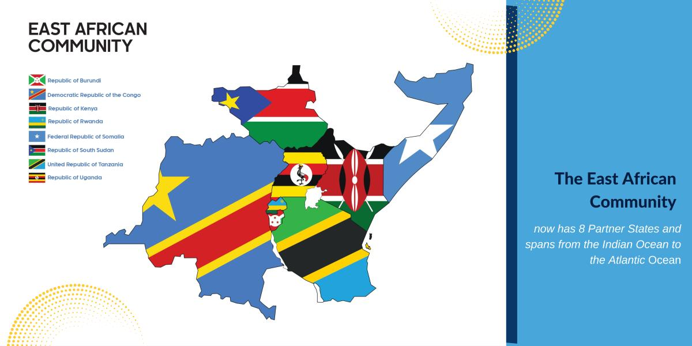

Why Uganda?
Our strategic anchor in the heart of East Africa: a gateway to regional opportunities and a foundation for global connections.
Choosing Uganda Was Never Incidental
When we founded Jopetnah International Limited (JIL), choosing Uganda was a deliberate strategic decision. We saw a country whose geographic position, growing economy, regional linkages and emerging opportunities form a powerful platform for an internationally oriented, multi-sector enterprise.
Headquartered in Kampala, Jopetnah is positioned to engage domestic markets, East and Central Africa, and the wider global business landscape.
Meaningful growth happens when global capabilities meet local knowledge, trusted relationships and practical execution.

The East African Community has eight Partner States. Image: East African Community.
What Uganda Offers
To international investors, development partners, businesses and institutions looking toward Africa, Uganda offers a rare combination of strategic location, human capital, natural resources, emerging industries and regional market access. We do not merely observe these advantages. We build upon them.
A Strategic Geographic & Logistical Gateway
At the heart of East Africa, Uganda sits within the region’s interconnected trade, transport and economic networks. Its location opens access to neighbouring markets and established regional corridors that span East and Central Africa.
As a member of the East African Community (EAC), a regional organisation of eight Partner States with an estimated 331 million citizens, Uganda participates in an increasingly integrated regional economy.
Road and air connections, proximity to key commercial centres and established trade routes make Kampala more than a domestic base. It is a strategic platform for cross-border trade, multi-country partnerships and coordinated regional engagement.
A Young, Dynamic & Entrepreneurial Workforce
Uganda’s predominantly young population, expanding labour force and entrepreneurial energy create a fertile environment for enterprise. An English-speaking business culture, a growing skills base and regional talent networks support professional collaboration and capability development.
We recognise that sustainable enterprise rests not only on capital and infrastructure, but on people, knowledge and institutional strength. Through training, international employment, consultancy, technology and professional services, Jopetnah works to connect qualified capabilities with real opportunities, strengthening enterprises and contributing to broader economic progress.
Untapped Potential Across High-Impact Sectors
Agriculture and agribusiness. Infrastructure and construction. Energy, petroleum and natural resources. Manufacturing, healthcare, education, tourism, technology and trade.
Uganda’s agricultural base, emerging oil and gas industry, mineral resources, infrastructure needs and rising demand for essential services present substantial opportunities for investment, enterprise development and partnership.
Translating potential into results, however, requires technical expertise, reliable supply chains, stakeholder coordination, appropriate financing and the ability to move from plans to practical outcomes. This is where Jopetnah’s multi-sector model becomes distinctive.
Operating across 16 strategic sectors, we bring together complementary capabilities in consultancy, research, training, employment, engineering, logistics, trade, energy, agriculture, technology and more. Our approach connects relevant expertise, coordinates complementary services and delivers integrated solutions, drawing on internal capacity and qualified local and international partners as needed.
A Growing Investment & Development Ecosystem
Uganda’s investment landscape spans established and emerging industries, supported by sector incentives, regional integration frameworks and international cooperation. Opportunities exist for domestic expansion, foreign direct investment, technology transfer, infrastructure development and collaborative initiatives.
Success, however, depends on genuine understanding of the regulatory environment, institutional landscape and commercial practices. Being rooted in Uganda allows Jopetnah to engage with local insight while maintaining an international outlook, building constructive relationships with public institutions, private enterprises, investors and development partners to create mutual value.
Local Knowledge. International Connections. Integrated Solutions.
Our headquarters in Uganda reflects a core philosophy: international opportunities are most effectively pursued when global perspective is grounded in local understanding and practical implementation.
Rather than leaving clients and partners to navigate disconnected service providers, Jopetnah offers a coordinated point of engagement. Depending on the assignment, this may involve direct delivery, specialist expertise, strategic partnerships or facilitated collaboration with qualified providers.
Our ambition is clear: to make cross-sector collaboration more accessible, business engagement more coherent, and opportunities more actionable. From Uganda, we build connections that extend beyond geography.
Our Commitment to Global Partners
Uganda is our strategic home and an important gateway to the opportunities of East and Central Africa. From our headquarters in Kampala, Jopetnah International Limited works to connect businesses, investors, development partners and technical capabilities with opportunities across diverse markets and sectors.
We believe sustainable progress occurs when global vision is supported by trusted local knowledge, meaningful partnerships and practical execution. Whether facilitating trade, supporting business expansion, coordinating integrated solutions or enabling development-oriented initiatives, we are committed to creating value through collaboration and purposeful engagement.
We welcome partnerships built on shared objectives, professional integrity, mutual respect and a commitment to sustainable outcomes.
Welcome to Uganda. Welcome to opportunity, connected.
JOPETNAH INTERNATIONAL LIMITED
Empowering Businesses with Practical Solutions.